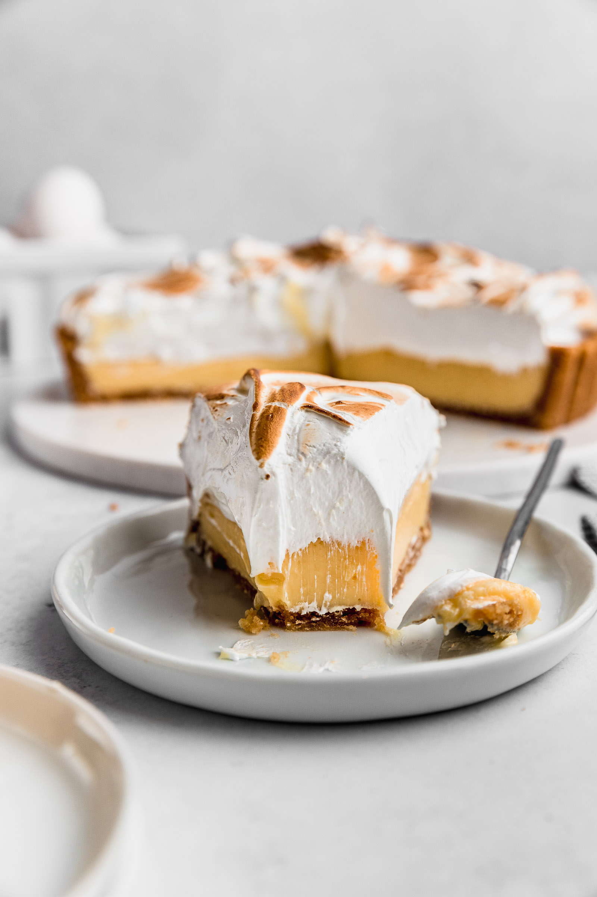

Pie
Home

Pie de limón, también conocido como pastel de merengue de limón,
es un postre popular originario de los Estados Unidos, pero ha
ganado popularidad en muchos países, incluyendo América Latina.
Es un postre dulce y ácido que combina una corteza de pastel con
mantequilla, un relleno de limón suave y saletado y un merengue
esponjoso.
Ingredientes
- 440 g galletas yo usé de vainilla
- 200 g mantequilla sin sal derretida
- 2 cdta sal
- 1,600 g leche condensada
- 360 ml jugo de limón verde / limón sutil / lima
- 12 yemas de huevo
- 12 claras de huevo
- el doble del peso de las claras en azúcar blanca granulada
Intrucciones
- Moler las galletas con la sal y agregar la mantequilla.
- Poner sobre una base para pie y presionar primero con los dedos y terminar de aplanar y compactar con la
parte de atrás de un vaso.
- Llevar a un horno precalentado a 160°C/320°F por 5-10min o hasta que empiece a dorarse ligeramente. Ten
cuidado que se puede quemar fácilmente.
- Dejar enfriar por completo antes de ponerle el relleno para que no se humedezca.
- Mezclar el jugo de limón con la leche condensada.
- Agregar las yemas una por una y mezclar inmediatamente para que no se oxiden con el azúcar de la leche
condensada ni con el ácido del limón.
- Verter sobre la base de galletas y llevar al horno todavía a 160°C/320°F por 20min.
- Dejar enfriar por completo y llevar al refrigerador por toda la noche.
- Hacerlo lo más cercano posible a servir, siempre es más rico fresco.
- Echar las claras y azúcar en un bowl donde luego vayas a batir. Lo llevamos a baño maría sin que la base del
bowl toque el agua y mezclamos cada cierto tiempo.
- Una vez que esté bien caliente y no sintamos gránulos de azúcar (inserta tu dedo y toca la base del bowl
para asegurarte), lo sacamos del baño maría. Si tienes un termómetro de comida, tiene que estar a
79°C/174°F. y batimos a velocidad máxima hasta que esté firme y a temperatura ambiente.
- Esparcir sobre el pie.
- Puedes dorar el merengue con un soplete, meterlo a un horno a 200°C/400°F por pocos minutos en modo broil o
simplemente dejarlo blanquito.